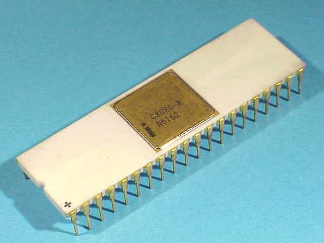

- 8080
(around 1978, when I was an undergrad in Delft)
- This is the grand-daddy of the Intel processors:
-

- No memory management -
"real mode"
In this mode, a program may access any memory
address, even the memory of other programs!
- 8 bits data bus, 16 bits address bus (64 K memory !)
- Registers in the CPU:
8 bits 8 bits <------------> <------------> +------------+ +------------+ | A | | Flags | +------------+ +------------+ +------------+ +------------+ | B | | C | +------------+ +------------+ +------------+ +------------+ | D | | E | +------------+ +------------+ +------------+ +------------+ | H | | L | +------------+ +------------+ <------- 16 bits ------> +------------------------+ | SP | Stack pointer +------------------------+Description:
- A register = Accumuulator, main register used for calculations
- Flag register = contains flags...
- B register = general purpose reg
- C register = Counting register, can be used as counter in for loops
- Note:
The B and
C
registers
can be concatenated together
to form a 16 bit register
BC
- D register = general purpose reg DE
- E register = general purpose reg
- Note:
The D and
E
registers
can be concatenated together
to form a 16 bit register
DE
- H register = general purpose register
- L register = general purpose reg
- Note: The H and L registers can be concatenated together to form a 16 bit register HL
- This is the grand-daddy of the Intel processors:
- 8086
(around 1981)
- No memory management -
(only has the
"real mode")
- 16 bits data bus
(can transfer data twice as fast as
the 8080)
- 20 bits address bus
(wow, 1 Mega byte memory !)
- Memory
- The 8086 CPU
cannot address
the entire 1 Mbyte memory
at once
- The 8086 CPU can only
access
64 KBytes of memory
at any one time
- It uses a segment register
that points to the start (base)
of a 64 K byte segment:
Memory CS=10000 --+ +--------+ | | | | . ..... . | . ..... . | | | +------> 160000 +--------+ - | | ^ | | | 64 K byte memory ("segment") | | | | | v +--------+ - | | . .... . . .... . | |
- A memory address
in 8086 has
20 bits
(1 Mbytes)
A memory address is formed as follows:
<------- 16 bits -----> +---------------------+ | A segment register |0000 +---------------------+ <------- 16 bits -----> +---------------------+ + | A general register | +---------------------+ ---------------------------------- +--------------------------+ | a 20 bits value | +--------------------------+(The segment register is shifted 4 bits and then added to a general purpose register)
- The segment register
is used as a "base pointer
and the general
purpose register is used
as an "offset" to access
the memory:
Memory | | +-------------+----+ | | | Segment reg |0000|--->|---------------| --- +-------------+----+ | | ^ + | | | +---------------+ | | | 1 segment | gen. purp reg | | | | +---------------+ | | | | | | | 64 K (216) | | | | +------------>|---------------| | effective addr | | | |---------------| | | | | | | V |---------------| ---
- The 8086 CPU
cannot address
the entire 1 Mbyte memory
at once
- Notation:
- XX:YY = the memory address
from by the
segment register XX and
the index (offset) register YY
The effective memory address is equal to:
<------- 16 bits -----> +---------------------+ | Register XX |0000 +---------------------+ <------- 16 bits -----> +---------------------+ + | Register YY | +---------------------+ ---------------------------------- +--------------------------+ | effective addr | +--------------------------+
- XX:YY = the memory address
from by the
segment register XX and
the index (offset) register YY
- Registers in the
8086 CPU:
16 bits 16 bits <---------------------> <---------------------> +---------------------+ +---------------------+ "General purpose" | AX | | BX | registers +---------------------+ +---------------------+ +---------------------+ +---------------------+ | CX | | DX | +---------------------+ +---------------------+
+---------------------+ +---------------------+ Index registers | SI | | DI | +---------------------+ +---------------------+
+---------------------+ +---------------------+ Segment registers | CS | | DS | +---------------------+ +---------------------+ +---------------------+ +---------------------+ | SS | | ES | +---------------------+ +---------------------+
+---------------------+ +---------------------+ Misc. | BP | | IP | +---------------------+ +---------------------+ +---------------------+ | SP | +---------------------+Notes:
- AX = accumulator;
- AH = upper half of AX,
- AL = lower half of AX
- BX = general purpose register,
- BH = upper half of BX,
- BL = lower half of BX
- CX = Counting register (implement
for loops),
- CH = upper half of CX,
- CL = lower half of CX
- DX = general purpose register,
- DH = upper half of DX,
- DL = lower half of DX
- Segment registers:
- CS = code segment register (base address of the segment containing program code)
- DS = data segment register (base address of the segment containing memory variables)
- SS = stack segment register (base address of the segment containing the stack)
- ES = "extra" segment register (base address of the destination segment in string operations)
- SI = Source index register
- DI = Destination index register
(The 8086 has a memory copy instruction that transfer data at memory location given by SS:SI to memory location given by ES:DI)
- BP = Base pointer (= frame pointer !)
- SP =
Stack pointer
- IP = Instruction pointer (CS:IP = program counter)
- AX = accumulator;
- SI, DI, SP, BP and
IP
are "offset" registers.
Each "offset" register works in conjunction with its own default segment register:
- CS:IP =
the address of
the next instruction in memory.
- DS:AX,
DS:BX,
DS:CX,
DS:DX,
= the memory address of
a memory operand
- DS:SI = the
source address of the
string instruction
- ES:DI =
the
destination address of the
string instruction
- SS:SP = the
stack pointer
- SS:BP = the frame pointer
- CS:IP =
the address of
the next instruction in memory.
- Segment register "override"
- The index registers
(SI, DI, SP, BP, IP) can be used with
other segments
(overriding the default segment
register)
- The 8086 has the following
general addressing format:
mov ax, [baseReg + indexReg + constant]
When you specify a baseReg in the instruction, you override the default base register for indexReg
- The index registers
(SI, DI, SP, BP, IP) can be used with
other segments
(overriding the default segment
register)
- No memory management -
(only has the
"real mode")
- 80286
(around 1985)
- Main improvement:
- "Protected" mode
This operational mode uses "virtual" memory (cs355)
- "Protected" mode
- Short-comings:
- Unfortunately, it is a
very weird "24 bits
protected mode" :
- The 80286 CPU can access up to
16 megabytes
- The virtual memory
protects programs from accessing each other's memory.
- However, programs are still using 64 K segments
- The 80286 CPU can access up to
16 megabytes
- The 80286 can also run in "real mode" (for compatability reasons)
- Unfortunately, it is a
very weird "24 bits
protected mode" :
- 80286 registers:
- There were no improvements (changes)
in registers
- The registers of the 80286 are exactly the same as those in 8086
- There were no improvements (changes)
in registers
- Main improvement:
- 80386
- Finally....
- The 80386 is the
first modern 32 bit CPU in the
Intel family
- 80386 provides the
full 32 bit protected mode:
- 32 bit registers
- 32 bit address bus
- I.e.: a complete 32 bit computer
- Modern Intel assembler programs are all written using the pretected mode...
- The 80386 is the
first modern 32 bit CPU in the
Intel family
- Registers in the
80386 CPU:
32 bits 32 bits <---------------------> <---------------------> +---------------------+ +---------------------+ "General purpose" | EAX | | EBX | registers +---------------------+ +---------------------+ +---------------------+ +---------------------+ | ECX | | EDX | +---------------------+ +---------------------+
+---------------------+ +---------------------+ Index registers | ESI | | EDI | +---------------------+ +---------------------+
+---------------------+ +---------------------+ Misc. | EBP | | EIP | +---------------------+ +---------------------+ +---------------------+ | ESP | +---------------------+
Segment registers: (Not used in protected mode !) ==================== 16 bits 16 bits <---------------------> <---------------------> +---------------------+ +---------------------+ | CS | | DS | +---------------------+ +---------------------+ +---------------------+ +---------------------+ | SS | | ES | +---------------------+ +---------------------+ +---------------------+ +---------------------+ | FS | | GS | +---------------------+ +---------------------+Notes:
- EAX = accumulator;
- AX = lower half of EAX
- AL =
lower quart of EAX
Graphically:
EAX register: +----------+----------+----------+----------+ | | | | | +----------+----------+----------+----------+ |<-------->| AL |<------------------->| AX |<-----------------------------------------| EAX
- EBX = general purpose register
- BX = lower half of EBX,
- BL = lower quart of EBX
- ECX = Counting register (for for loop)
- CX = lower half of ECX,
- CL = lower quart of ECX
- EDX = general purpose register,
DX = lower half of EDX,
DL = lower quart of EDX
- DX = lower half of EDX,
- DL = lower quart of EDX
- ESI = Source index register
- EDI = Destination index register
- EBP = Base pointer (= frame pointer !)
- ESP = Stack pointer
- EIP =
Instruction pointer
(= program counter)
- 16 bit segment registers:
- CS = code segment register (base address of the segment containing program code)
- DS = data segment register (base address of the segment containing memory variables)
- SS = stack segment register (base address of the segment containing the stack)
- ES = "extra" segment register (base address of the "auxiliary" segment)
- FS = additional auxiliary segment register
- GS = additional auxiliary segment register
(These segment registers are not used in the protected mode)
- EAX = accumulator;
- Graphically:

- Finally....
- 80486
- Nothing new to report, just faster...
- Pentium
- Nothing new to report, just faster...